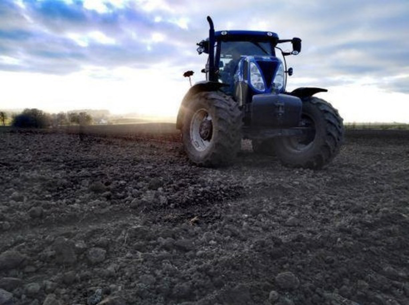

New-Holland
Story
 New Holland is a well-known brand in both the agricultural and construction markets. In construction sites around the world, you can find backhoe loaders, compact crawler excavators, crawler dozers, crawler excavators, graders, skid steer loaders, and wheel loaders brandishing the bold mark of New Holland. If you live in a more agricultural area, you'll often see New Holland tractors, spreaders, combines, headers, and utility vehicles working on farms and ranches. New Holland is a brand that has truly permeated the heavy machinery industry, and is an interesting study for the history of heavy equipment manufacturers.